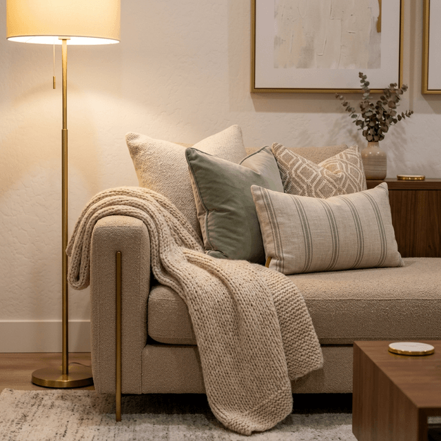
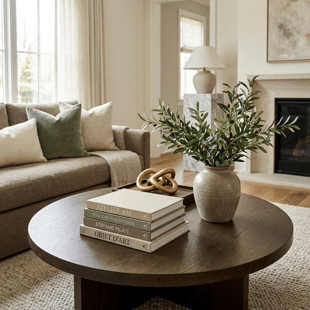

7 Designer Secrets to Make Your Living Room Look Incredibly Expensive
We’ve all been there. You’re scrolling through Pinterest or Instagram late at night, staring at these breathtaking, perfectly styled homes, and thinking, Why doesn’t my living room look like that? Let’s be completely honest for a second. Most of us don’t have a massive budget to drop $15,000 at Restoration Hardware or hire a high-end interior architect. But here’s the best-kept secret in the design world: creating a luxurious, expensive-feeling space has very little to do with the price tags on your furniture. It has everything to do with scale, intention, and how you style what you already have.
A truly high-end living room feels curated and deeply comfortable—like it was put together thoughtfully over years, rather than bought all at once from a catalog.
If you’re ready to ditch the standard "builder-grade" feel and give your space a major glow-up, grab a coffee. Here are seven simple designer secrets that will instantly elevate your living room, no renovation required.

1. Ditch the "Postage Stamp" Rug
If there is one massive mistake that instantly cheapens a room, it’s buying an area rug that is way too small. A tiny 5x7 rug floating awkwardly under your coffee table makes the entire room feel disjointed and visually shrinks the space.
The Fix: Always go bigger than you think you need. For a standard American living room, you generally want an 8x10 or even a 9x12 rug. The golden rule? At least the front two legs of your sofa and accent chairs should sit comfortably on the rug. If you are looking for that perfect high-end texture, I highly recommend using a high-quality neutral area rug to anchor your space beautifully.
2. Hang Your Curtains High and Wide
Want to know how designers make standard 8-foot ceilings look like grand 10-foot ceilings? It’s an optical illusion using window treatments.
The Fix: Never mount your curtain rod resting right on top of the window frame. Instead, install the rod about 1 to 2 inches below your ceiling line (or crown molding) and extend it 6 to 10 inches past the sides of the window. Grab some extra-long linen or velvet drapes (95" or 108") so they just barely kiss the floor. It looks incredibly custom and lets in so much more natural light.
3. Turn Off the "Big Light"
Relying solely on that harsh overhead ceiling fan light is a guaranteed way to make your cozy living room feel like a dentist’s waiting area. Luxury homes rely heavily on layered, warm lighting.
The Fix: You need three layers: ambient, task, and accent. Bring in a beautiful floor lamp, add a small reading lamp next to your favorite chair, and maybe install some plug-in wall sconces flanking your sofa (matte brass or antique gold finishes instantly look expensive). And please, make sure all your bulbs are a warm, inviting temperature—look for 2700K on the box!

4. The Pillow "Karate Chop" Method
You know those stiff, matching pillows that came free with your sofa? It's time to hide them in a closet. Flat, lifeless pillows are a dead giveaway of budget furniture.
The Fix: Invest in textured pillow covers—think rich velvet, heavy linen, or a soft sage green cotton—and buy oversized down (or down-alternative) inserts. If your pillow cover is 18x18, stuff it with a plush 20x20 pillow insert. It makes the pillow look full, luxurious, and high-end. Give it a gentle "karate chop" right in the middle for that classic designer look.
5. Float Your Furniture
When we aren't sure how to layout a room, our natural instinct is to push the sofa and chairs completely flat against the walls, leaving a massive, awkward "dance floor" in the center of the room.
The Fix: Pull your furniture away from the walls! Even if it’s just three or four inches, "floating" your sofa creates breathing room. Group your seating closer together around the coffee table to create an intimate, purposeful conversation area. It instantly makes the layout feel professionally designed.
6. Swap the Tiny Art for One Statement Piece
A bunch of tiny, random picture frames scattered across a large wall can look chaotic and cluttered. High-end spaces embrace boldness and scale.
The Fix: Instead of a messy gallery wall, opt for oversized art. One massive, beautifully framed canvas (like a 36x48 inch piece) above your sofa acts as a stunning focal point. Budget hack: Buy a cheap digital art print online, get it printed at Walgreens, and pop it into a large, matted frame from Target or HomeGoods.
7. Master the "Rule of Three" on Your Coffee Table
A bare coffee table looks completely unfinished, but a cluttered one just looks messy. The secret to that effortless, expensive styling lies in balance.
The Fix: Use the "Rule of Three" and group items in odd numbers. A fail-proof, chic combination is:
- A stack of two or three large, beautiful aesthetic coffee table books.
- A sculptural object (like a textured ceramic bowl or a matte gold candle snuffer).
- A touch of life—like a minimalist vase holding elegant faux olive branches to bring organic warmth into the room.

The Bottom Line
Elevating your home isn’t about draining your bank account. It’s about knowing the rules of scale, playing with textures, and keeping the space curated. You don't have to tackle all of these at once. Start this weekend by rearranging your layout or fluffing up those pillows, and watch how completely the vibe of your room shifts.
What is your biggest struggle when it comes to styling your living room? Let me know in the comments below!